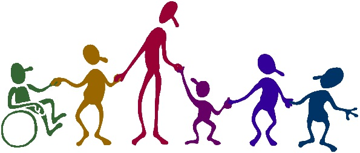

Dedicated to serving the community and making a positive impact.
Here at Jagjit Welfare Trust, we run various initiatives and support programs. Explore our website to learn more about what we do and how you can get involved.
"The best way to find yourself is to lose yourself in the service of others." – Mahatma Gandhi
"Service to others is the rent you pay for your room here on earth." – Muhammad Ali